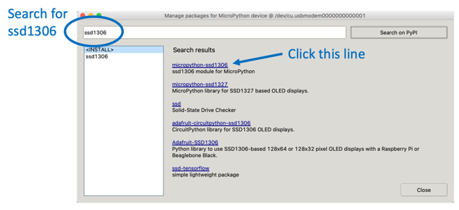

You can now use the Thonny "Tools -> Manage Packages..." menu to add the Python driver for the SSD1306 device. You will need to do this for every new device you use.

If the Manage Packages menu is disabled, then you will need to go into the shell and add it with the pip command.
Install SSD1306 Module
ssd1306 module
SSD1306 Library - click the RAW button and then right click to do a "Save As"
The four wire I2C interface is great for kids that don't want to hook up more than four wires. But there are times when we want a higher performance screen with faster refresh times. This is when the SPI interface comes in handy.
frommachineimportPinfromssd1306importSSD1306_SPI# default is data (MOSI) on GP7 and clock (sck) on GP6spi=machine.SPI(0)print(spi)SPI(0,baudrate=992063,polarity=0,phase=0,bits=8,sck=6,mosi=7,miso=4)### SPI Baudratehttps://raspberrypi.github.io/pico-sdk-doxygen/group__hardware__spi.html#ga37f4c04ce4165ac8c129226336a0b66cThesevenwiresonthebackoftheSPIOLEDscreensarethefollowingasreadfromthetoptobottomlookingatthebackofthedisplay:1.CS-ChipSelect-pin42.DC-Data/Command-pin53.RES-Reset-pin64.SDA-Data-SPIOTXGP7pin105.SCL-Clock-ConnecttoSPIOSCKGP6pin96.VCC-Connecttothe3.3VOutpin367.GND-pin38or3anyotherGNDpin### Pico Pins
* SCK is the clock - hook this to the oled SCL
* MOSI is the line taking data from your Pico to the peripheral device. Hook this to SDA
From the SDK:
https://datasheets.raspberrypi.org/pico/raspberry-pi-pico-python-sdk.pdf
Section 3.7
1. SPI0_SCK - pin 6
2. SPI0_MOSI - pin 7
3. SPI0_MISO - pin 8
This contradicts p122 in GET STARTED WITH MICROPYTHON ON RASPBERRY PI PICO
We send the data to the SPI RX (Receive) port on the Pico. These are pin 1 (GP0) or pin 6 (GP4)
## Sample Nonworking SPI Code
From the documentation:
!!! From Raspberry Pi Pico Documentation
**spi** is an SPI object, which has to be created beforehand and tells the ports for SCLJ and MOSI. MISO is not used.
**dc** is the GPIO Pin object for the Data/Command selection. It will be initialized by the driver.
**res** is the GPIO Pin object for the reset connection. It will be initialized by the driver. If it is not needed, it can be set to None or omitted. In this case the default value of None applies.
**cs** is the GPIO Pin object for the CS connection. It will be initialized by the driver. If it is not needed, it can be set to None or omitted. In this case the default value of None applies.
```py
import machine
import utime
import ssd1306
led = machine.Pin(25, machine.Pin.OUT)
spi_sck=machine.Pin(6)
spi_tx=machine.Pin(7)
# spi_rx=machine.Pin(4)
spi=machine.SPI(0,baudrate=100000,sck=spi_sck, mosi=spi_tx)
CS = machine.Pin(8)
DC = machine.Pin(9)
RES = machine.Pin(10)
oled = ssd1306.SSD1306_SPI(128, 64, spi, DC, RES, CS)
# flash all pixels on
oled.fill(1)
oled.show()
utime.sleep(0.5)
oled.fill(0)
oled.text('CoderDojo Rocks!', 0, 0, 1)
oled.show()
# flash the LED to show end
led.high()
utime.sleep(0.5)
led.low()
print('Done')